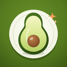
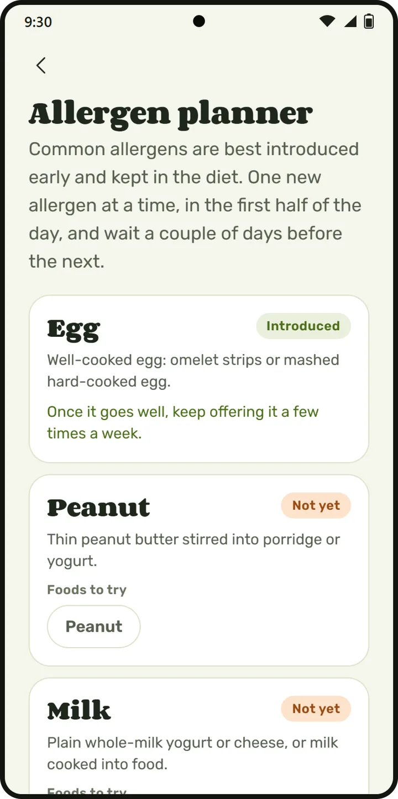
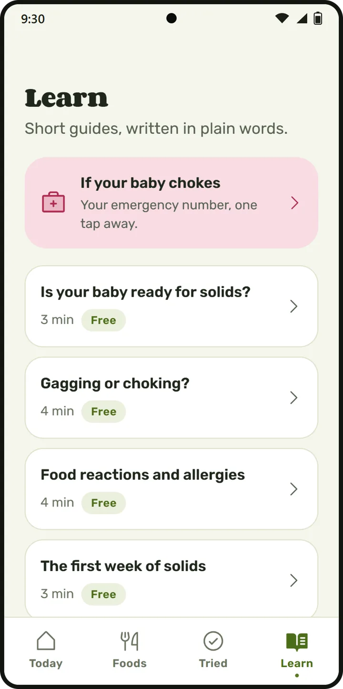

MunchletWhen and how to serve your baby’s first foods
Munchlet is a guide to starting solids and baby-led weaning for Android. Look up 89 foods, see how to cut each one at every age and how risky it is to choke on, and keep a log of what your baby has tried.
For Android. Free to start, with an optional Pro upgrade. General information, not medical advice.
How to serve each food, stage by stage
Every food page shows how to prepare it at 6 to 8 months, 9 to 11 months and 12 months and older: the size, the shape and how soft it should be.
- The choking risk on every food, from low to high, next to how to prepare it
- Foods that are not recommended for babies, such as honey, whole nuts and popcorn, are marked as such
- Nutrient tags such as iron, omega-3, calcium, fiber and vitamin C
89 foods, searchable and filtered by age
Search a food by name, or filter the list to what suits your baby’s age now, iron-rich foods or the common allergens. Each row shows whether a food is ready now and flags the ones with a high choking risk.
A log of every first food
Mark a food as tried, note how it went and write down any reaction. The Tried tab counts the foods by group and shows which common allergens your baby has already had.
- Up to 10 foods on the free plan
- Unlimited foods, with reactions and notes (Pro)
- More than one baby (Pro)
The common allergens, one at a time
The allergen planner lists nine common allergens (egg, peanut, milk, sesame, wheat, tree nuts, soy, fish and shellfish), shows which ones your baby has had and suggests a food to offer for each one.
- The allergen planner (Pro)

Short guides in plain words
16 short guides, from signs of readiness and gagging or choking to food reactions, iron, portions and food refusal. Five of them are free, and so is the emergency card with the call button for your country.
- Five safety guides and the emergency card on the free plan
- All 16 guides (Pro)

Free and Pro
| Free | Pro | |
|---|---|---|
| Food guide | Common first foods and every food with a higher choking risk | All 89 foods |
| First-foods log | Up to 10 foods, one baby | Unlimited, more than one baby |
| Allergen planner | Not included | Included |
| Guides | 5 guides and the emergency card | All 16 guides |
| Account and ads | No account, no ads | No account, no ads |
Pro is a yearly or monthly subscription, or a one-time lifetime purchase. Google Play shows the price in your currency before you buy.
Questions
Is Munchlet medical advice?
No. Munchlet gives general information about starting solids and does not replace your pediatrician. Ask them about your own baby.
Does Munchlet need an account?
No. There is no account to create and there are no ads.
What can I use for free?
The common first foods and every food with a higher choking risk, the emergency card, five guides and a log of up to 10 foods for one baby. Pro adds the rest of the 89 foods, unlimited tracking, the allergen planner and all 16 guides.
Which languages does Munchlet speak?
English, Spanish, Portuguese, French, German, Italian and Turkish.
Where do I get it?
Munchlet is on Google Play for Android phones. Search for Munchlet or use the button on this page.
Keep Munchlet next to the highchair
For Android. Free to start, with an optional Pro upgrade. General information, not medical advice.